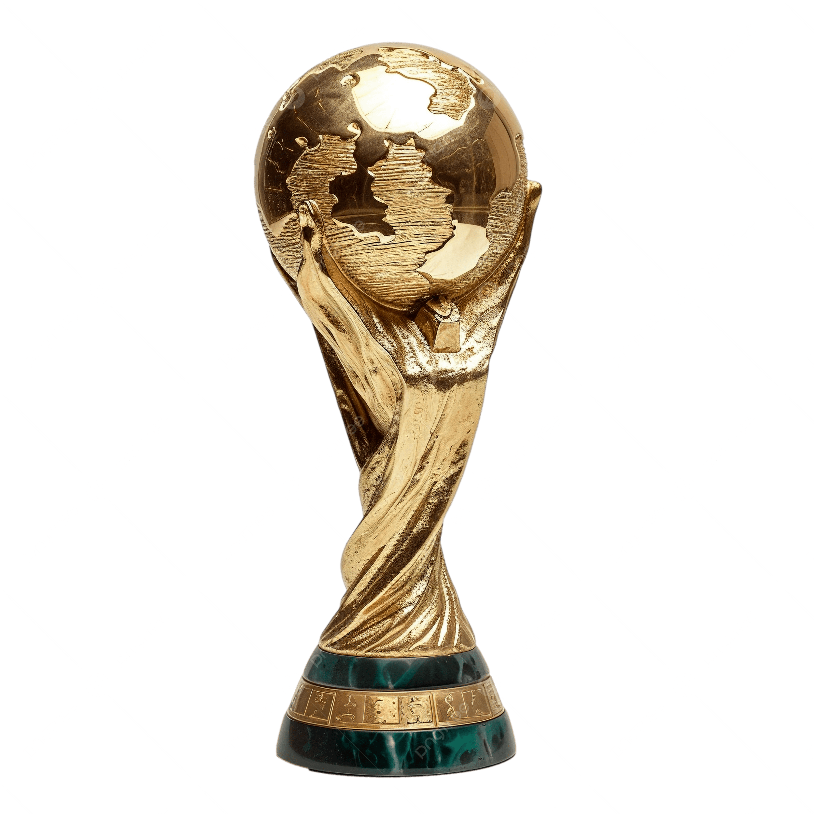
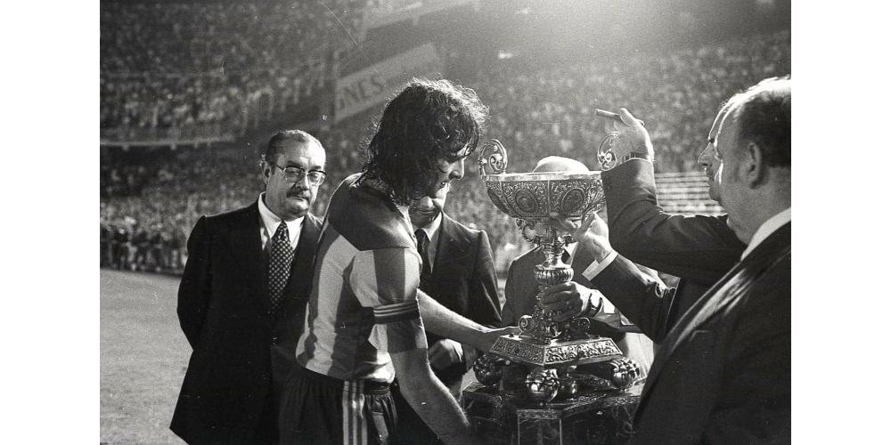

LaLiga: equipos y leyendas
Una página sobre los clubes y los jugadores que forman su historia.
LaLiga: equipos y leyendas
Una página sobre los clubes y los jugadores que forman su historia.
Leyenda del Valencia CF



Mario Alberto Kempes, conocido como Mario Kempes, nació en Argentina el 15 de julio de 1954 y alcanzó fama mundial como El Matador. El delantero llegó al Valencia en el verano de 1976 y convirtió Mestalla en uno de los grandes escenarios de su carrera. Su potencia, su llegada al área y su facilidad para marcar lo hicieron decisivo tanto para el club como para Argentina. En 1978 conquistó el Mundial, siendo además su máximo goleador y mejor jugador.
Kempes marcó los dos goles del Valencia en la final de Copa de 1979.
En sus primeras temporadas valencianistas obtuvo dos trofeos Pichichi consecutivos: marcó 24 goles en la Liga 1976/77 y 28 en la siguiente edición. El éxito internacional de 1978 reforzó su condición de figura, pero su contribución en Valencia siguió creciendo. En la final de Copa de 1979 anotó los dos tantos de la victoria sobre el Real Madrid, con el equipo vestido con la camiseta de la senyera. Un año después participó en la conquista de la Recopa, que el Valencia ganó ante el Arsenal en la tanda de penaltis.
A aquella etapa se añadió la Supercopa de Europa de 1980 frente al Nottingham Forest. El balance oficial valencianista de Kempes alcanza 246 partidos y 149 goles, cifras que explican su lugar entre los grandes atacantes del club. Con Argentina, su Mundial de 1978 dejó seis goles, incluidos dos en la final contra los Países Bajos. La combinación de títulos, capacidad goleadora y actuaciones decisivas convirtió a El Matador en una referencia internacional. Su vínculo con Mestalla continuó después de su carrera, con visitas y homenajes que mantuvieron viva la memoria de sus éxitos.